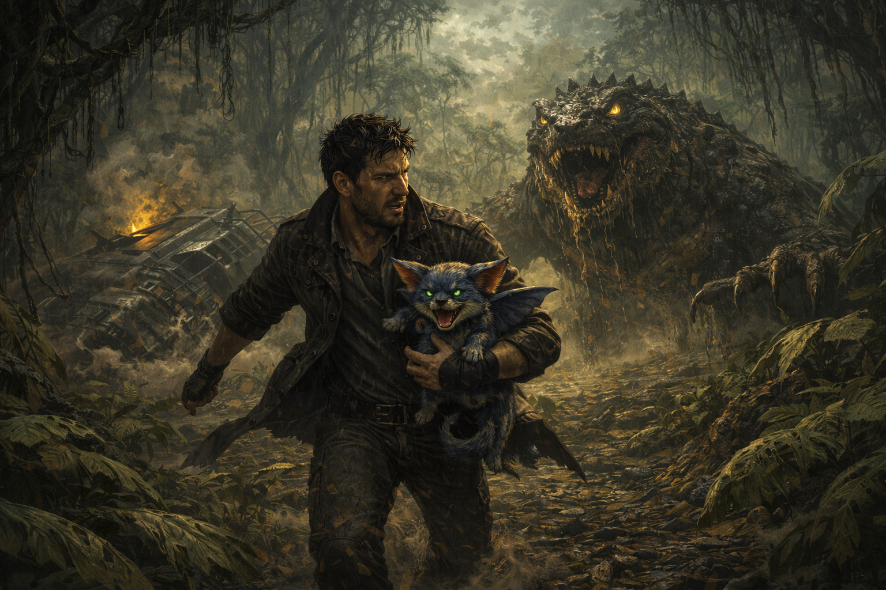

Guardé la Golden Gun. No era el momento ni el lugar. La criatura rugía y avanzaba pero sus ojos no eran de maldad pura, eran de miedo. Estaba protegiendo su hogar, igual que yo había protegido el mío alguna vez.
Tomé a KAWA con fuerza y corrí. Corrí sin mirar atrás, sin disparar, sin dejarme llevar por la rabia que la Golden Gun siempre intentaba despertar en mí. Esa arma había sido forjada por los Oscuros, la organización que había puesto precio a la cabeza de Elvira. Yo se la robé la noche que lo sacrifiqué todo para salvarla. Era un arma de odio puro y cada vez que la usaba me recordaba esa noche, esa decisión, ese dolor.
KAWA voló a mi lado mientras corríamos entre la vegetación densa. El planeta era hostil pero no imposible. Y en algún lugar de ese lago pantanoso, SITA seguía hundiéndose. No iba a dejarla morir.
Buscar a SITA y rescatarla